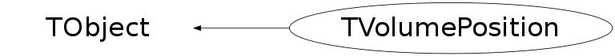

class TVolumePosition: public TObject
*-*-*-*-*-*-*-*-* S T N O D E P O S I T I O N description *-*-*-*-*-*-*-*-*- *-* =========================== - *-* A TVolumePosition object is used to build the geometry hierarchy (see TGeometry). *-* A node may contain other nodes. - *-* A geometry node has attributes: *-* - name and title *-* - pointer to the referenced shape (see TShape). *-* - x,y,z offset with respect to the mother node. *-* - pointer to the rotation matrix (see TRotMatrix). - *-* A node can be drawn. - *
Function Members (Methods)
public:
| TVolumePosition(const TVolumePosition& pos) | |
| TVolumePosition(const TVolumePosition* oldPosition, const TVolumePosition* curPosition) | |
| TVolumePosition(TVolume* node = 0, Double_t x = 0, Double_t y = 0, Double_t z = 0, TRotMatrix* matrix = 0) | |
| TVolumePosition(TVolume* node, Double_t x, Double_t y, Double_t z, const char* matrixname) | |
| virtual | ~TVolumePosition() |
| void | TObject::AbstractMethod(const char* method) const |
| virtual void | TObject::AppendPad(Option_t* option = "") |
| virtual void | Browse(TBrowser* b) |
| static TClass* | Class() |
| virtual const char* | TObject::ClassName() const |
| virtual void | TObject::Clear(Option_t* = "") |
| virtual TObject* | TObject::Clone(const char* newname = "") const |
| virtual Int_t | TObject::Compare(const TObject* obj) const |
| virtual void | TObject::Copy(TObject& object) const |
| virtual Double_t* | Cormx2Local(const Double_t* masterCorr, Double_t* localCorr) const |
| virtual Float_t* | Cormx2Local(const Float_t* masterCorr, Float_t* localCorr) const |
| virtual Double_t* | Cormx2Master(const Double_t* localCorr, Double_t* masterCorr) const |
| virtual Float_t* | Cormx2Master(const Float_t* localCorr, Float_t* masterCorr) const |
| virtual TDataSet* | DefineSet() |
| virtual void | TObject::Delete(Option_t* option = "")MENU |
| virtual Int_t | DistancetoPrimitive(Int_t px, Int_t py) |
| virtual void | Draw(Option_t* depth = "3")MENU |
| virtual void | TObject::DrawClass() constMENU |
| virtual TObject* | TObject::DrawClone(Option_t* option = "") constMENU |
| virtual void | TObject::Dump() constMENU |
| virtual Float_t* | Errmx2Local(const Float_t* masterError, Float_t* localError) const |
| virtual Double_t* | Errmx2Local(const Double_t* masterError, Double_t* localError) const |
| virtual Float_t* | Errmx2Master(const Float_t* localError, Float_t* masterError) const |
| virtual Double_t* | Errmx2Master(const Double_t* localError, Double_t* masterError) const |
| virtual void | TObject::Error(const char* method, const char* msgfmt) const |
| virtual void | TObject::Execute(const char* method, const char* params, Int_t* error = 0) |
| virtual void | TObject::Execute(TMethod* method, TObjArray* params, Int_t* error = 0) |
| virtual void | ExecuteEvent(Int_t event, Int_t px, Int_t py) |
| virtual void | TObject::Fatal(const char* method, const char* msgfmt) const |
| virtual TObject* | TObject::FindObject(const char* name) const |
| virtual TObject* | TObject::FindObject(const TObject* obj) const |
| virtual Option_t* | TObject::GetDrawOption() const |
| static Long_t | TObject::GetDtorOnly() |
| virtual const char* | TObject::GetIconName() const |
| virtual UInt_t | GetId() const |
| const TRotMatrix* | GetMatrix() const |
| TRotMatrix* | GetMatrix() |
| virtual const Char_t* | GetName() const |
| virtual TVolume* | GetNode() const |
| virtual char* | GetObjectInfo(Int_t px, Int_t py) const |
| static Bool_t | TObject::GetObjectStat() |
| virtual Option_t* | GetOption() const |
| virtual const char* | TObject::GetTitle() const |
| virtual UInt_t | TObject::GetUniqueID() const |
| Int_t | GetVisibility() const |
| virtual Double_t | GetX(Int_t indx = 0) const |
| virtual const Double_t* | GetXYZ() const |
| virtual Double_t | GetY() const |
| virtual Double_t | GetZ() const |
| virtual Bool_t | TObject::HandleTimer(TTimer* timer) |
| virtual ULong_t | TObject::Hash() const |
| virtual void | TObject::Info(const char* method, const char* msgfmt) const |
| virtual Bool_t | TObject::InheritsFrom(const char* classname) const |
| virtual Bool_t | TObject::InheritsFrom(const TClass* cl) const |
| virtual void | TObject::Inspect() constMENU |
| void | TObject::InvertBit(UInt_t f) |
| virtual Bool_t | Is3D() const |
| virtual TClass* | IsA() const |
| virtual Bool_t | TObject::IsEqual(const TObject* obj) const |
| virtual Bool_t | IsFolder() const |
| Bool_t | IsMatrixOwner() const |
| Bool_t | TObject::IsOnHeap() const |
| virtual Bool_t | TObject::IsSortable() const |
| Bool_t | TObject::IsZombie() const |
| virtual Double_t* | Local2Master(const Double_t* local, Double_t* master, Int_t nPoints = 1) const |
| virtual Float_t* | Local2Master(const Float_t* local, Float_t* master, Int_t nPoints = 1) const |
| virtual void | TObject::ls(Option_t* option = "") const |
| virtual Double_t* | Master2Local(const Double_t* master, Double_t* local, Int_t nPoints = 1) const |
| virtual Float_t* | Master2Local(const Float_t* master, Float_t* local, Int_t nPoints = 1) const |
| void | TObject::MayNotUse(const char* method) const |
| virtual TVolumePosition& | Mult(const TVolumePosition& position) |
| virtual Bool_t | TObject::Notify() |
| void | TObject::Obsolete(const char* method, const char* asOfVers, const char* removedFromVers) const |
| static void | TObject::operator delete(void* ptr) |
| static void | TObject::operator delete(void* ptr, void* vp) |
| static void | TObject::operator delete[](void* ptr) |
| static void | TObject::operator delete[](void* ptr, void* vp) |
| void* | TObject::operator new(size_t sz) |
| void* | TObject::operator new(size_t sz, void* vp) |
| void* | TObject::operator new[](size_t sz) |
| void* | TObject::operator new[](size_t sz, void* vp) |
| TVolumePosition& | operator=(const TVolumePosition& rhs) |
| virtual void | Paint(Option_t* option = "") |
| virtual void | TObject::Pop() |
| virtual void | Print(Option_t* option = "") const |
| virtual Int_t | TObject::Read(const char* name) |
| virtual void | TObject::RecursiveRemove(TObject* obj) |
| virtual TVolumePosition* | Reset(TVolume* node = 0, Double_t x = 0, Double_t y = 0, Double_t z = 0, TRotMatrix* matrix = 0) |
| void | TObject::ResetBit(UInt_t f) |
| virtual void | TObject::SaveAs(const char* filename = "", Option_t* option = "") constMENU |
| virtual void | SavePrimitive(ostream& out, Option_t* option = "") |
| void | TObject::SetBit(UInt_t f) |
| void | TObject::SetBit(UInt_t f, Bool_t set) |
| virtual void | TObject::SetDrawOption(Option_t* option = "")MENU |
| static void | TObject::SetDtorOnly(void* obj) |
| virtual void | SetId(UInt_t id) |
| virtual void | SetLineAttributes()MENU |
| virtual void | SetMatrix(TRotMatrix* matrix = 0) |
| Bool_t | SetMatrixOwner(Bool_t ownerShips = kTRUE) |
| virtual void | SetNode(TVolume* node) |
| static void | TObject::SetObjectStat(Bool_t stat) |
| virtual void | SetPosition(Double_t x = 0, Double_t y = 0, Double_t z = 0) |
| virtual void | TObject::SetUniqueID(UInt_t uid) |
| virtual void | SetVisibility(Int_t vis = 1)MENU |
| virtual void | SetX(Double_t x) |
| virtual void | SetXYZ(Double_t* xyz = 0) |
| virtual void | SetY(Double_t y) |
| virtual void | SetZ(Double_t z) |
| virtual void | ShowMembers(TMemberInspector& insp) |
| virtual void | Streamer(TBuffer& b) |
| void | StreamerNVirtual(TBuffer& b) |
| virtual void | TObject::SysError(const char* method, const char* msgfmt) const |
| Bool_t | TObject::TestBit(UInt_t f) const |
| Int_t | TObject::TestBits(UInt_t f) const |
| virtual void | UpdatePosition(Option_t* option = "") |
| virtual void | TObject::UseCurrentStyle() |
| virtual void | TObject::Warning(const char* method, const char* msgfmt) const |
| virtual Int_t | TObject::Write(const char* name = 0, Int_t option = 0, Int_t bufsize = 0) |
| virtual Int_t | TObject::Write(const char* name = 0, Int_t option = 0, Int_t bufsize = 0) const |
protected:
| void | DeleteOwnMatrix() |
| virtual void | TObject::DoError(int level, const char* location, const char* fmt, va_list va) const |
| void | TObject::MakeZombie() |
Data Members
public:
| enum EPositionBits { | kIsOwn | |
| }; | ||
| enum TObject::EStatusBits { | kCanDelete | |
| kMustCleanup | ||
| kObjInCanvas | ||
| kIsReferenced | ||
| kHasUUID | ||
| kCannotPick | ||
| kNoContextMenu | ||
| kInvalidObject | ||
| }; | ||
| enum TObject::[unnamed] { | kIsOnHeap | |
| kNotDeleted | ||
| kZombie | ||
| kBitMask | ||
| kSingleKey | ||
| kOverwrite | ||
| kWriteDelete | ||
| }; |
protected:
| UInt_t | fId | Unique ID of this position |
| TRotMatrix* | fMatrix | Pointer to rotation matrix |
| TVolume* | fNode | Refs pointer to the node defined |
| Double_t | fX[3] | X offset with respect to parent object |
Class Charts
{kind=link}
{kind=link}
{kind=link}
{kind=link}

Function documentation
TVolumePosition(TVolume* node, Double_t x, Double_t y, Double_t z, const char* matrixname)
Node normal constructor*-*-*-*- *-* ====================== - *-* name is the name of the node *-* title is title *-* x,y,z are the offsets of the volume with respect to his mother *-* matrixname is the name of the rotation matrix - *-* This new node is added into the list of sons of the current node -
TVolumePosition(TVolume* node = 0, Double_t x = 0, Double_t y = 0, Double_t z = 0, TRotMatrix* matrix = 0)
Node normal constructor *-* ================================ - *-* name is the name of the node *-* title is title *-* x,y,z are the offsets of the volume with respect to his mother *-* matrix is the pointer to the rotation matrix - *-* This new node is added into the list of sons of the current node -
TVolumePosition(const TVolumePosition* oldPosition, const TVolumePosition* curPosition)
Pick the "old" position by pieces
Int_t DistancetoPrimitive(Int_t px, Int_t py)
-*-*-*-*-*Compute distance from point px,py to a Node *-* =========================================== *-* Compute the closest distance of approach from point px,py to this node. *-* The distance is computed in pixels units. - - *
void Draw(Option_t* depth = "3")
-*-*-*-*-*-*-*-*Draw Referenced node with current parameters *-* =============================================
void ExecuteEvent(Int_t event, Int_t px, Int_t py)
-*-*-*-*-*-*-*Execute action corresponding to one event *-* ========================================= *-* This member function must be implemented to realize the action *-* corresponding to the mouse click on the object in the window *
Double_t * Local2Master(const Double_t* local, Double_t* master, Int_t nPoints = 1) const
-*-*Convert one point from local system to master reference system *-* ============================================================== Note that before invoking this function, the global rotation matrix and translation vector for this node must have been computed. This is automatically done by the Paint functions. Otherwise TVolumePosition::UpdateMatrix should be called before.
Float_t * Local2Master(const Float_t* local, Float_t* master, Int_t nPoints = 1) const
-*Convert nPoints points from local system to master reference system *-* ============================================================== Note that before invoking this function, the global rotation matrix and translation vector for this node must have been computed. This is automatically done by the Paint functions. Otherwise TVolumePosition::UpdateMatrix should be called before.
Double_t * Master2Local(const Double_t* master, Double_t* local, Int_t nPoints = 1) const
-*-*Convert one point from master system to local reference system *-* ============================================================== Note that before invoking this function, the global rotation matrix and translation vector for this node must have been computed. This is automatically done by the Paint functions. Otherwise TVolumePosition::UpdateMatrix should be called before.
Float_t * Master2Local(const Float_t* master, Float_t* local, Int_t nPoints = 1) const
-*Convert nPoints points from master system to local reference system *-* ============================================================== Note that before invoking this function, the global rotation matrix and translation vector for this node must have been computed. This is automatically done by the Paint functions. Otherwise TVolumePosition::UpdateMatrix should be called before.
void Paint(Option_t* option = "")
-*-*-*-*-*-*-*-*Paint Referenced node with current parameters *-* ============================================== *
TVolumePosition * Reset(TVolume* node = 0, Double_t x = 0, Double_t y = 0, Double_t z = 0, TRotMatrix* matrix = 0)
-*-*-*-* Reset this position *-* =================== *-* x,y,z are the offsets of the volume with respect to his mother *-* matrix is the pointer to the rotation matrix - *-* This method is to re-use the memory this object without delete/create steps -
TVolumePosition & Mult(const TVolumePosition& position)